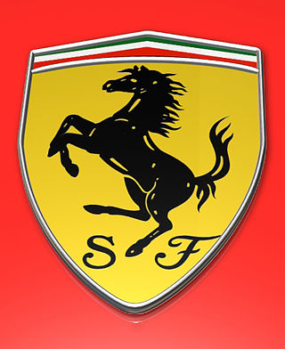

Scuderia Ferrari

Scuderia Ferrari es la división deportiva (Gestione Sportiva) de automóviles Ferrari encargada de las competiciones de Fórmula 1.
Es el equipo más longevo de Fórmula 1 y el más exitoso.
La primera participación de Ferrari en Fórmula 1 fue en el Gran Premio de Mónaco de 1950, con el Tipo 125 F1. Ferrari es considerado uno de los cuatro grandes equipos
de Fórmula 1, junto con Williams, McLaren y Mercedes.4 Es el equipo activo más antiguo del campeonato, y es el que ha conseguido más victorias, campeonatos de pilotos (15)
y campeonatos de constructores (16). Ha contado con muchos de los pilotos más destacados de la historia de la Fórmula 1 como Michael Schumacher, Niki Lauda, Juan Manuel Fangio,
Alberto Ascari, Alain Prost, Nigel Mansell, Carlos Reutemann, Gilles Villeneuve, Kimi Räikkönen, Sebastian Vettel y Fernando Alonso, entre otros. Los pilotos actuales son
Charles Leclerc y Carlos Sainz Jr..
En sport prototipos y gran turismos, Ferrari ha obtenido nueve victorias absolutas en las 24 Horas de Le Mans, ocho en la Mille Miglia y siete en la Targa Florio;
además ha conquistado múltiples títulos de constructores en el Campeonato Mundial de Resistencia.
Como proveedor de motores
Ferrari siempre ha producido los motores para sus propios monoplazas de Fórmula 1, y también ha suministrado motores a otros equipos. Previamente, Ferrari proporcionaba
sus motores para Minardi (1991), Scuderia Italia (1992-1993), Sauber (1997-2005 con motores llamados Petronas, y 2010-2018), Prost (2001, llamados Acer), Red Bull (2006)
, Spyker (2007) Force India (2008), Toro Rosso (2007-2013, 2016) y Marussia (2014-2015). En la temporada 2021 provee motores a Haas y Alfa Romeo.
Fuera de sus chasis, Ferrari ha ganado solamente un Gran Premio; el de Italia 2008 con Toro Rosso.